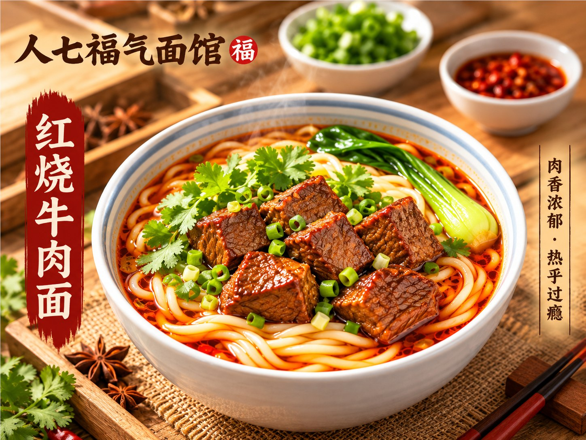
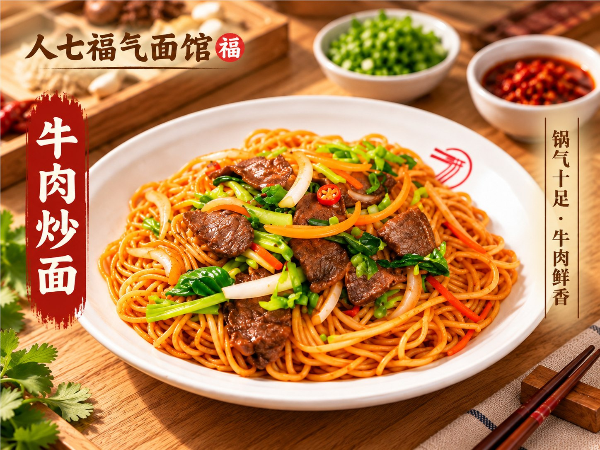
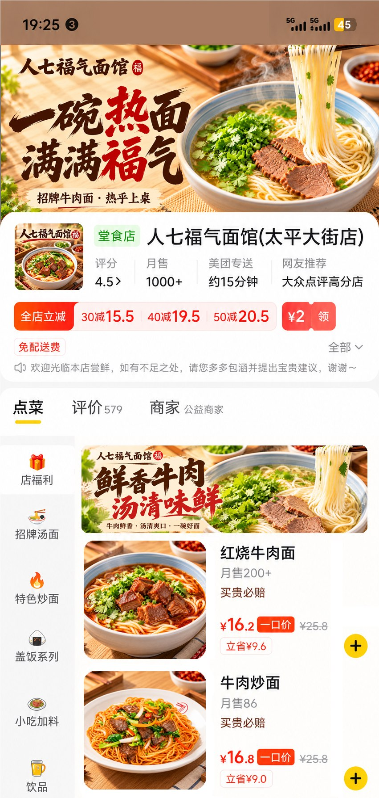
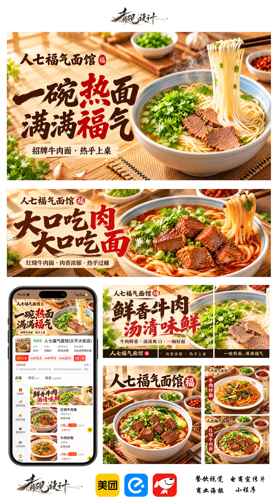

品牌氛围
以暖木色、书法字体和红色强调信息构成餐饮识别，将“热气、牛肉、汤鲜”转化为直接可读的视觉信息。
菜品系列原图


外卖平台应用
将头图、菜品图和信息层级放入平台场景中，检查可读性与系列一致性。

完整设计效果


以暖木色、书法字体和红色强调信息构成餐饮识别，将“热气、牛肉、汤鲜”转化为直接可读的视觉信息。


将头图、菜品图和信息层级放入平台场景中，检查可读性与系列一致性。

